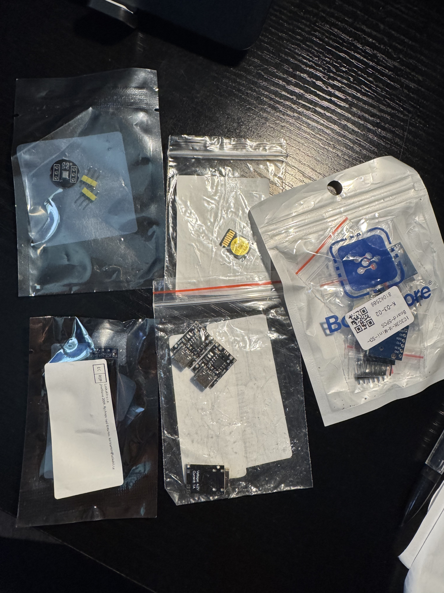
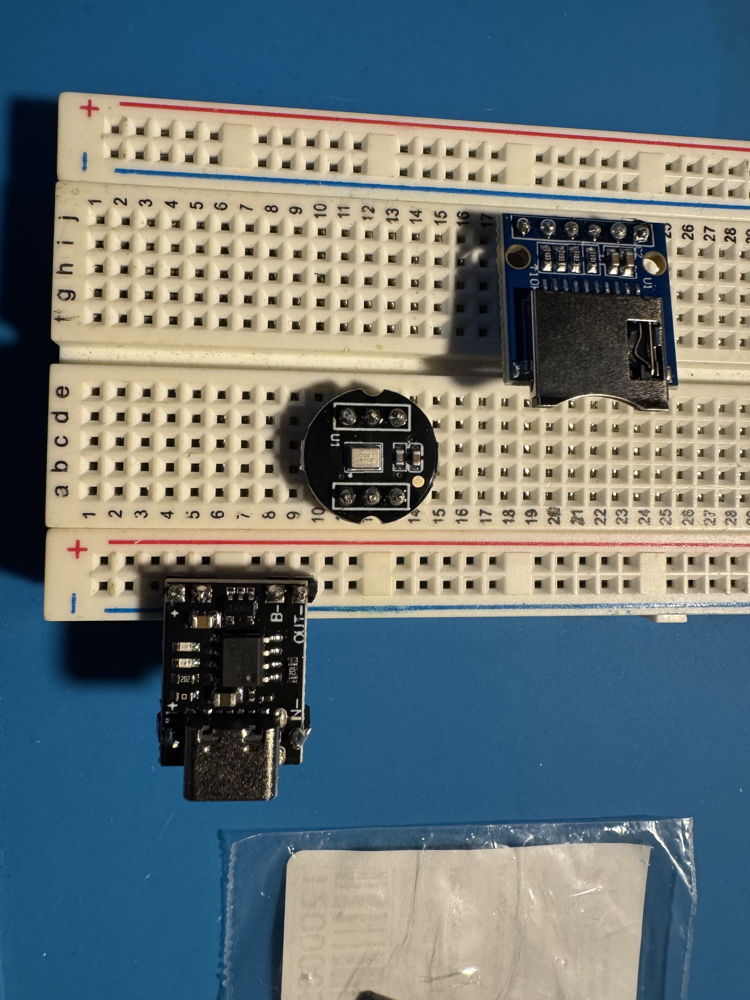
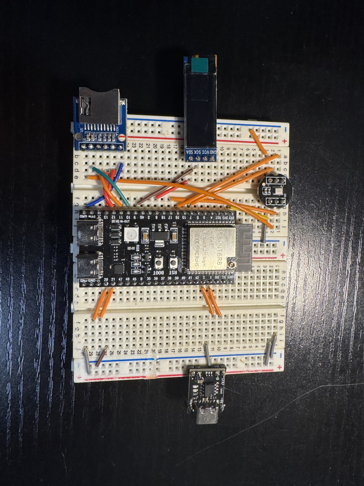

Pager
Got the materials and started to solder, wire, and began the coding on the pager.


bought all the items from AliExpress. came out to about 10 bucks. only got the ones with high reviews.

soldered headers onto them. the oled came with the pins pre-soldered, but they're kinda janky. the chargers came in a pack of 3, so i decided to solder ever pin even though I think I only need 2.

im using a ESP32-S3 N16R8 to control the project. The breadboard was used for something else before so it has wires everywhere, so most are useless. this layout is just a test obv. i still have to try out the charger, i have a couple lipo batteries laying around that i could try it on. I got some code written up but its only the set up. from what i saw, the speaker might be annoying to work with. the ssd1306 oled screen is normal. the sd card reader looked ok.
#include <Arduino.h>
#include <SPI.h>
#include <SD.h>
#include <Wire.h>
#include <Adafruit_GFX.h>
#include <Adafruit_SSD1306.h>
#include <driver/i2s.h>
#define SCREEN_WDITH 128
#define SCREEN_HEIGHT 32
#define OLED_RESET -1
#define I2S_SCK 16
#define I2S_WS 7
#define I2S_SD 17
#define I2S_PORT I2S_NUM_0
#define SAMPLE_RATE 16000
#define BUFFER_LEN 64
int32_t sampleBuffer[BUFFER_LEN];
const int soundThreshold = 500;
const int ledPin = 48;
const int chipSelect = 10;
File myFile;
Adafruit_SSD1306 display(SCREEN_WDITH, SCREEN_HEIGHT, &Wire, OLED_RESET);
void setupI2SMic() {
i2s_config_t i2s_config = {
.mode = (i2s_mode_t)(I2S_MODE_MASTER | I2S_MODE_RX),
.sample_rate = SAMPLE_RATE,
.bits_per_sample = I2S_BITS_PER_SAMPLE_32BIT,
.channel_format = I2S_CHANNEL_FMT_ONLY_LEFT, // tie L/R pin on mic to GND
.communication_format = I2S_COMM_FORMAT_STAND_I2S,
.intr_alloc_flags = ESP_INTR_FLAG_LEVEL1,
.dma_buf_count = 8,
.dma_buf_len = BUFFER_LEN,
.use_apll = false,
.tx_desc_auto_clear = false,
.fixed_mclk = 0
};
i2s_pin_config_t pin_config = {
.bck_io_num = I2S_SCK,
.ws_io_num = I2S_WS,
.data_out_num = I2S_PIN_NO_CHANGE, // not used, receive only
.data_in_num = I2S_SD
};
esp_err_t err;
err = i2s_driver_install(I2S_PORT, &i2s_config, 0, NULL);
if (err != ESP_OK) {
Serial.printf("i2s_driver_install failed: %d\n", err);
}
err = i2s_set_pin(I2S_PORT, &pin_config);
if (err != ESP_OK) {
Serial.printf("i2s_set_pin failed: %d\n", err);
}
i2s_zero_dma_buffer(I2S_PORT);
}
void setup() {
Serial.begin(115200);
///////////////////////
//Making sure all the components work before continuing
Serial.print("Initializing SD card...");
if (!SD.begin()){
Serial.println("Failed to start.");
return;
}
Serial.print("Initialization done.");
if (!display.begin(SSD1306_SWITCHCAPVCC, 0x3C)){
Serial.println(F("SSD1306 failed to connect"));
for(;;);
}
Serial.print("Setting up Mic...");
setupI2SMic();
//////////////////////
display.clearDisplay();
}
void loop() {
size_t bytesRead = 0;
i2s_read(I2S_PORT, sampleBuffer, sizeof(sampleBuffer), &bytesRead, portMAX_DELAY);
int samplesRead = bytesRead / sizeof(int32_t);
for (int i = 0; i < samplesRead; i++) {
int32_t sample = sampleBuffer[i] >> 8; // extract 24-bit value, left-justified in 32-bit word
Serial.println(sample);
}
}claude only helped me to trouble shoot the library for the speaker, since i couldnt find anything recent that talked about using the INMP441 in vs code with platformIO. it also helped me with some of the pin layout since i wasnt sure if I had to share certain pins due to their capablities but ig not. even though it says i dont, we'll see about when i try it out with code.
literally tried out the 512mb micro sd card i also bought as im typing this. it works, reads 503.2 mb.
gonna commit about 1hr a day to this since now its mostly code.
also tried to create 3D models but honestly got kinda bored with that pretty fast but i should still do it
link to conversation : https://claude.ai/share/995c9682-69e0-429b-bf3c-2a6a6032ab04